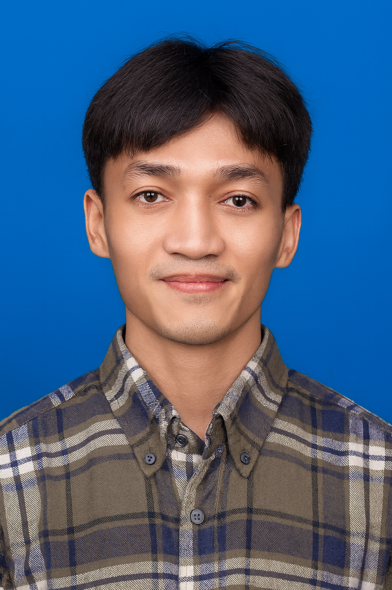

Delivering rapid hardware diagnostics, Mikrotik network routing, and multi-endpoint maintenance across factory floors and corporate offices. Combines field troubleshooting with PowerShell 7+ automation and SQL database upkeep to guarantee maximum system uptime.
Component-level diagnostics (RAM, SSD, PSU), SMART drive health audits, thermal paste renewal, Windows 10/11 Pro & Debian headless deployments, and rapid HDD-to-SSD cloning.
Structured Cat5e/Cat6 LAN cabling (T568B), Mikrotik router config, VLAN (802.1Q) segmentation, DHCP/Static IP management, enterprise Wi-Fi APs, and Wireshark packet analysis.
Maintenance of ESC/POS thermal printers, industrial barcode scanners, and touchscreen kiosks, accelerated by PowerShell 7+ scripts, batch automation, M365, and ERP/SQL administration.
Engineered automated PowerShell 7+ and Windows batch suites for unattended workstation diagnostics, disk optimization, drive health (SMART) auditing, and silent driver/patch deployments across office endpoints.
Configured and maintained high-reliability queue management and POS hardware, integrating ESC/POS thermal receipt printers, auto-cutter hex protocols, USB/RS-232 barcode scanners, and resolving Windows print spooler lockups.
Deployed industrial touchscreen kiosks and structured Cat6 Gigabit LAN across factory production lines. Configured Mikrotik routers with VLAN segmentation (802.1Q), DHCP reservations, and Wi-Fi APs for zero-interference plant operations.
Administered daily operations and database health for Odoo and ERPNext production tracking. Executed PostgreSQL queries, resolved sync conflicts, managed M365/Google Workspace user permissions, and provided prompt remote support via AnyDesk.